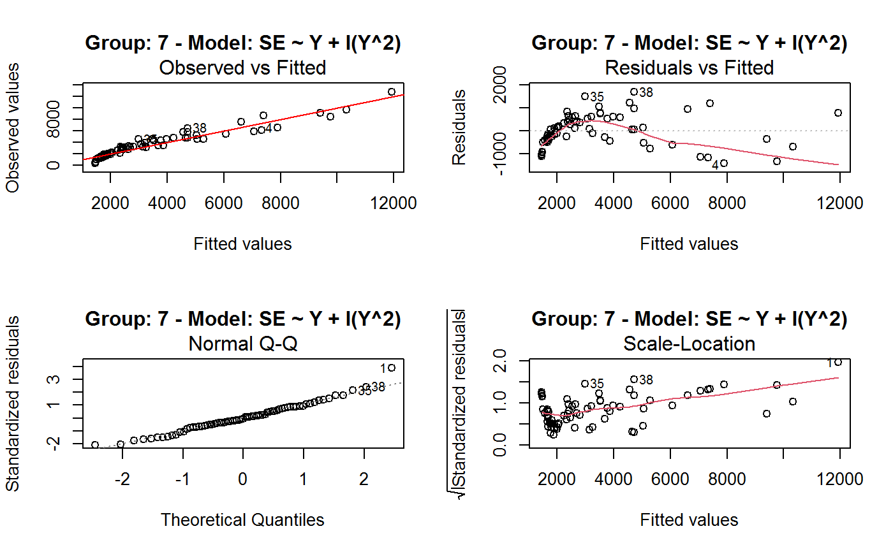
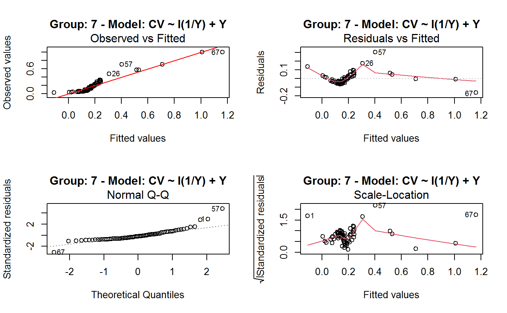
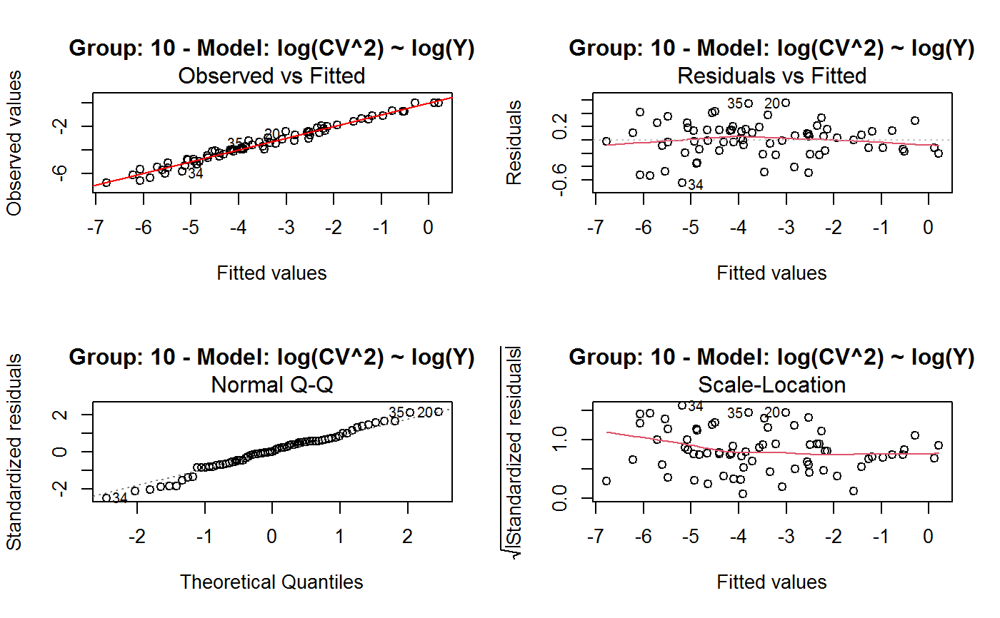
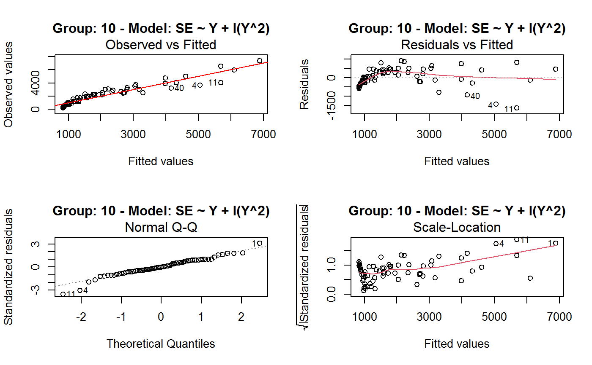

Identify the Best Fit GVF Model
getBest.RdGiven a set of competing fitted GVF models, this function selects the best model according to a given criterion.
getBest(object, criterion = c("R2", "adj.R2", "AIC", "BIC"), ...)
Arguments
| object | Typically, an object containing many fitted GVF models (i.e. of class |
|---|---|
| criterion | The quality criterion to be used for model selection. Default is |
| ... | Further arguments passed to or from other methods. |
Details
Given a set of competing fitted GVF models, this function selects the best model according to a given criterion.
Four goodness-of-fit criteria are available: R^2, adjusted R^2, AIC, and BIC (see getR2).
If object is a set of GVF models fitted to grouped data (i.e. of class gvf.fits.gr), the function will return the fitted GVF model with best average score in the given criterion over the groups.
Value
A single GVF fitted model.
Methodological Warning
Each one of the available criteria has its own specificities and limitations (e.g. it is senseless to use AIC to compare two GVF models with different response variables). It is up to the user to select the measure which is appropriate to his goals.
See also
GVF.db to manage ReGenesees archive of registered GVF models, gvf.input and svystat to prepare the input for GVF model fitting, fit.gvf to fit GVF models, plot.gvf.fit to get diagnostic plots for fitted GVF models, drop.gvf.points to drop alleged outliers from a fitted GVF model and simultaneously refit it, and predictCV to predict CV values via fitted GVF models.
Examples
#> Classes ‘gvf.input’ and 'data.frame': 349 obs. of 5 variables: #> $ name: Factor w/ 349 levels "age10c1","age10c10",..: 331 348 349 332 333 334 11 12 13 14 ... #> $ Y : num 924101 470061 454041 536680 312655 ... #> $ SE : num 17173 12796 11360 13970 11181 ... #> $ CV : num 0.0186 0.0272 0.025 0.026 0.0358 ... #> $ VAR : num 2.95e+08 1.64e+08 1.29e+08 1.95e+08 1.25e+08 ... #> - attr(*, "y.vars")= chr [1:7] "ind" "sex" "marstat" "age5c" ... #> - attr(*, "stats.kind")= chr "Absolute Frequency" #> - attr(*, "has.Deff")= logi FALSE #> - attr(*, "design")= symbol exdes# List available registered GVF models: GVF.db#> #> # Registered GVF models currently available: #> #> Model.id GVF.model Estimator.kind Resp.to.CV #> 1 1 log(CV^2) ~ log(Y) Frequency sqrt(exp(resp)) #> 2 2 CV^2 ~ I(1/Y) Frequency sqrt(resp) #> 3 3 CV^2 ~ I(1/Y) + I(1/Y^2) Frequency sqrt(resp) #> 4 4 SE ~ Y + I(Y^2) Total resp/Y #> 5 5 CV ~ I(1/Y) + Y Total resp #>## (A) A *a set* of GVF models fitted to the same data ## # Fit example data to all registered GVF models: mm <- fit.gvf(ee.AF) summary(mm)#> ------------------------------------------------ #> GVF model: log(CV^2) ~ log(Y) #> - model.id: 1 #> - weights: NULL #> #> Residuals: #> Min 1Q Median 3Q Max #> -1.65000 -0.16023 0.03584 0.20039 1.78578 #> #> Coefficients: #> Estimate Std. Error t value Pr(>|t|) #> (Intercept) 5.75185 0.12862 44.72 <2e-16 *** #> log(Y) -0.99490 0.01325 -75.10 <2e-16 *** #> --- #> Signif. codes: 0 ‘***’ 0.001 ‘**’ 0.01 ‘*’ 0.05 ‘.’ 0.1 ‘ ’ 1 #> #> Residual standard error: 0.4134 on 341 degrees of freedom #> (6 observations deleted due to missingness) #> Multiple R-squared: 0.943, Adjusted R-squared: 0.9428 #> F-statistic: 5640 on 1 and 341 DF, p-value: < 2.2e-16 #> #> #> ------------------------------------------------ #> GVF model: CV^2 ~ I(1/Y) #> - model.id: 2 #> - weights: NULL #> #> Residuals: #> Min 1Q Median 3Q Max #> -0.29659 -0.01304 -0.01065 0.00067 0.32341 #> #> Coefficients: #> Estimate Std. Error t value Pr(>|t|) #> (Intercept) 1.316e-02 3.445e-03 3.821 0.000158 *** #> I(1/Y) 2.745e+02 4.673e+00 58.750 < 2e-16 *** #> --- #> Signif. codes: 0 ‘***’ 0.001 ‘**’ 0.01 ‘*’ 0.05 ‘.’ 0.1 ‘ ’ 1 #> #> Residual standard error: 0.0584 on 341 degrees of freedom #> (6 observations deleted due to missingness) #> Multiple R-squared: 0.9101, Adjusted R-squared: 0.9098 #> F-statistic: 3452 on 1 and 341 DF, p-value: < 2.2e-16 #> #> #> ------------------------------------------------ #> GVF model: CV^2 ~ I(1/Y) + I(1/Y^2) #> - model.id: 3 #> - weights: NULL #> #> Residuals: #> Min 1Q Median 3Q Max #> -0.262974 -0.005449 -0.000238 0.001962 0.270281 #> #> Coefficients: #> Estimate Std. Error t value Pr(>|t|) #> (Intercept) -5.151e-04 3.323e-03 -0.155 0.877 #> I(1/Y) 3.781e+02 1.111e+01 34.034 <2e-16 *** #> I(1/Y^2) -3.142e+04 3.131e+03 -10.035 <2e-16 *** #> --- #> Signif. codes: 0 ‘***’ 0.001 ‘**’ 0.01 ‘*’ 0.05 ‘.’ 0.1 ‘ ’ 1 #> #> Residual standard error: 0.05137 on 340 degrees of freedom #> (6 observations deleted due to missingness) #> Multiple R-squared: 0.9306, Adjusted R-squared: 0.9302 #> F-statistic: 2281 on 2 and 340 DF, p-value: < 2.2e-16 #> #> #> ------------------------------------------------ #> GVF model: SE ~ Y + I(Y^2) #> - model.id: 4 #> - weights: NULL #> #> Residuals: #> Min 1Q Median 3Q Max #> -2933.7 -653.7 -74.3 555.3 5102.8 #> #> Coefficients: #> Estimate Std. Error t value Pr(>|t|) #> (Intercept) 1.435e+03 6.257e+01 22.94 <2e-16 *** #> Y 4.054e-02 1.133e-03 35.78 <2e-16 *** #> I(Y^2) -2.832e-08 1.860e-09 -15.22 <2e-16 *** #> --- #> Signif. codes: 0 ‘***’ 0.001 ‘**’ 0.01 ‘*’ 0.05 ‘.’ 0.1 ‘ ’ 1 #> #> Residual standard error: 944.2 on 346 degrees of freedom #> Multiple R-squared: 0.8635, Adjusted R-squared: 0.8627 #> F-statistic: 1094 on 2 and 346 DF, p-value: < 2.2e-16 #> #> NOTE: fitted statistics have kind 'Absolute Frequency' #> whereas registered model has kind 'Total'! #> #> #> ------------------------------------------------ #> GVF model: CV ~ I(1/Y) + Y #> - model.id: 5 #> - weights: NULL #> #> Residuals: #> Min 1Q Median 3Q Max #> -0.40985 -0.05436 -0.02487 0.04842 0.36021 #> #> Coefficients: #> Estimate Std. Error t value Pr(>|t|) #> (Intercept) 1.655e-01 6.125e-03 27.014 <2e-16 *** #> I(1/Y) 2.662e+02 7.360e+00 36.170 <2e-16 *** #> Y -4.933e-07 5.682e-08 -8.682 <2e-16 *** #> --- #> Signif. codes: 0 ‘***’ 0.001 ‘**’ 0.01 ‘*’ 0.05 ‘.’ 0.1 ‘ ’ 1 #> #> Residual standard error: 0.08985 on 340 degrees of freedom #> (6 observations deleted due to missingness) #> Multiple R-squared: 0.8239, Adjusted R-squared: 0.8228 #> F-statistic: 795.2 on 2 and 340 DF, p-value: < 2.2e-16 #> #> NOTE: fitted statistics have kind 'Absolute Frequency' #> whereas registered model has kind 'Total'! #> #># Get the best model according to adjusted R^2: mm.best <- getBest(mm, criterion = "adj.R2") mm.best#> ---------------------------------------- #> GVF model: log(CV^2) ~ log(Y) #> - model.id: 1 #> - weights: NULL #> #> Coefficients: #> (Intercept) log(Y) #> 5.7518 -0.9949 #> #># NOTE: The *first* model has been selected. A thorough model comparison # by means of diagnostic plots would have led to the same result: plot(mm, 1:3)## (B) a *set of* GVF models fitted to *grouped* data ## # We have at our disposal the following survey design object on household data: exdes#> Stratified 2 - Stage Cluster Sampling Design (with replacement) #> - [55] strata #> - [1307, 2372] clusters #> #> Call: #> e.svydesign(data = example, ids = ~towcod + famcod, strata = ~SUPERSTRATUM, #> weights = ~weight, fpc = NULL, self.rep.str = NULL, check.data = TRUE)# Use function svystat to prepare *grouped* estimates and errors of counts # to be fitted separately (here groups are regions): ee.g <- svystat(exdes, y=~ind, by=~age5c:marstat:sex, combo=3, group=~regcod) str(ee.g)#> List of 3 #> $ 6 :Classes ‘gvf.input’ and 'data.frame': 69 obs. of 5 variables: #> ..$ name: chr [1:69] "6:ind" "6.1:ind" "6.2:ind" "6.3:ind" ... #> ..$ Y : num [1:69] 293458 40903 93388 118888 34964 ... #> ..$ SE : num [1:69] 8924 4080 6249 5682 4605 ... #> ..$ CV : num [1:69] 0.0304 0.0998 0.0669 0.0478 0.1317 ... #> ..$ VAR : num [1:69] 79634317 16648310 39046122 32287405 21209323 ... #> ..- attr(*, "y.vars")= chr "ind" #> ..- attr(*, "stats.kind")= chr "Absolute Frequency" #> ..- attr(*, "has.Deff")= logi FALSE #> $ 7 :Classes ‘gvf.input’ and 'data.frame': 71 obs. of 5 variables: #> ..$ name: chr [1:71] "7:ind" "7.1:ind" "7.2:ind" "7.3:ind" ... #> ..$ Y : num [1:71] 410672 55834 131681 148350 63303 ... #> ..$ SE : num [1:71] 12714 4814 6149 6490 5796 ... #> ..$ CV : num [1:71] 0.031 0.0862 0.0467 0.0437 0.0916 ... #> ..$ VAR : num [1:71] 1.62e+08 2.32e+07 3.78e+07 4.21e+07 3.36e+07 ... #> ..- attr(*, "y.vars")= chr "ind" #> ..- attr(*, "stats.kind")= chr "Absolute Frequency" #> ..- attr(*, "has.Deff")= logi FALSE #> $ 10:Classes ‘gvf.input’ and 'data.frame': 71 obs. of 5 variables: #> ..$ name: chr [1:71] "10:ind" "10.1:ind" "10.2:ind" "10.3:ind" ... #> ..$ Y : num [1:71] 219971 32191 69506 89226 24631 ... #> ..$ SE : num [1:71] 7322 2678 4026 3620 3092 ... #> ..$ CV : num [1:71] 0.0333 0.0832 0.0579 0.0406 0.1255 ... #> ..$ VAR : num [1:71] 53611574 7170100 16205547 13102640 9562313 ... #> ..- attr(*, "y.vars")= chr "ind" #> ..- attr(*, "stats.kind")= chr "Absolute Frequency" #> ..- attr(*, "has.Deff")= logi FALSE #> - attr(*, "group.vars")= chr "regcod" #> - attr(*, "class")= chr [1:2] "gvf.input.gr" "list"#> $`6` #> ------------------------------------------------ #> GVF model: log(CV^2) ~ log(Y) #> - model.id: 1 #> - weights: NULL #> #> Residuals: #> Min 1Q Median 3Q Max #> -0.65212 -0.19724 0.01411 0.16835 0.69592 #> #> Coefficients: #> Estimate Std. Error t value Pr(>|t|) #> (Intercept) 5.3879 0.2264 23.8 <2e-16 *** #> log(Y) -0.9528 0.0237 -40.2 <2e-16 *** #> --- #> Signif. codes: 0 ‘***’ 0.001 ‘**’ 0.01 ‘*’ 0.05 ‘.’ 0.1 ‘ ’ 1 #> #> Residual standard error: 0.3156 on 67 degrees of freedom #> Multiple R-squared: 0.9602, Adjusted R-squared: 0.9596 #> F-statistic: 1616 on 1 and 67 DF, p-value: < 2.2e-16 #> #> #> ------------------------------------------------ #> GVF model: CV^2 ~ I(1/Y) #> - model.id: 2 #> - weights: NULL #> #> Residuals: #> Min 1Q Median 3Q Max #> -0.172961 -0.009493 -0.006506 0.004306 0.222987 #> #> Coefficients: #> Estimate Std. Error t value Pr(>|t|) #> (Intercept) 9.834e-03 7.233e-03 1.36 0.179 #> I(1/Y) 2.709e+02 1.389e+01 19.51 <2e-16 *** #> --- #> Signif. codes: 0 ‘***’ 0.001 ‘**’ 0.01 ‘*’ 0.05 ‘.’ 0.1 ‘ ’ 1 #> #> Residual standard error: 0.05152 on 67 degrees of freedom #> Multiple R-squared: 0.8503, Adjusted R-squared: 0.8481 #> F-statistic: 380.6 on 1 and 67 DF, p-value: < 2.2e-16 #> #> #> ------------------------------------------------ #> GVF model: CV^2 ~ I(1/Y) + I(1/Y^2) #> - model.id: 3 #> - weights: NULL #> #> Residuals: #> Min 1Q Median 3Q Max #> -0.109020 -0.007769 0.004558 0.007663 0.174440 #> #> Coefficients: #> Estimate Std. Error t value Pr(>|t|) #> (Intercept) -7.947e-03 7.404e-03 -1.073 0.287 #> I(1/Y) 4.457e+02 3.966e+01 11.240 < 2e-16 *** #> I(1/Y^2) -1.072e+05 2.314e+04 -4.631 1.76e-05 *** #> --- #> Signif. codes: 0 ‘***’ 0.001 ‘**’ 0.01 ‘*’ 0.05 ‘.’ 0.1 ‘ ’ 1 #> #> Residual standard error: 0.04509 on 66 degrees of freedom #> Multiple R-squared: 0.887, Adjusted R-squared: 0.8836 #> F-statistic: 259.1 on 2 and 66 DF, p-value: < 2.2e-16 #> #> #> ------------------------------------------------ #> GVF model: SE ~ Y + I(Y^2) #> - model.id: 4 #> - weights: NULL #> #> Residuals: #> Min 1Q Median 3Q Max #> -2037.52 -470.59 -69.95 324.47 1945.46 #> #> Coefficients: #> Estimate Std. Error t value Pr(>|t|) #> (Intercept) 1.097e+03 1.187e+02 9.242 1.62e-13 *** #> Y 6.506e-02 3.984e-03 16.331 < 2e-16 *** #> I(Y^2) -1.403e-07 1.733e-08 -8.096 1.78e-11 *** #> --- #> Signif. codes: 0 ‘***’ 0.001 ‘**’ 0.01 ‘*’ 0.05 ‘.’ 0.1 ‘ ’ 1 #> #> Residual standard error: 701.5 on 66 degrees of freedom #> Multiple R-squared: 0.8852, Adjusted R-squared: 0.8818 #> F-statistic: 254.5 on 2 and 66 DF, p-value: < 2.2e-16 #> #> NOTE: fitted statistics have kind 'Absolute Frequency' #> whereas registered model has kind 'Total'! #> #> #> ------------------------------------------------ #> GVF model: CV ~ I(1/Y) + Y #> - model.id: 5 #> - weights: NULL #> #> Residuals: #> Min 1Q Median 3Q Max #> -0.19414 -0.03182 -0.01261 0.03109 0.21143 #> #> Coefficients: #> Estimate Std. Error t value Pr(>|t|) #> (Intercept) 1.655e-01 1.195e-02 13.851 < 2e-16 *** #> I(1/Y) 3.294e+02 1.892e+01 17.414 < 2e-16 *** #> Y -8.737e-07 1.705e-07 -5.123 2.82e-06 *** #> --- #> Signif. codes: 0 ‘***’ 0.001 ‘**’ 0.01 ‘*’ 0.05 ‘.’ 0.1 ‘ ’ 1 #> #> Residual standard error: 0.06527 on 66 degrees of freedom #> Multiple R-squared: 0.8737, Adjusted R-squared: 0.8698 #> F-statistic: 228.2 on 2 and 66 DF, p-value: < 2.2e-16 #> #> NOTE: fitted statistics have kind 'Absolute Frequency' #> whereas registered model has kind 'Total'! #> #> #> #> $`7` #> ------------------------------------------------ #> GVF model: log(CV^2) ~ log(Y) #> - model.id: 1 #> - weights: NULL #> #> Residuals: #> Min 1Q Median 3Q Max #> -0.47452 -0.16717 0.02446 0.13504 0.56351 #> #> Coefficients: #> Estimate Std. Error t value Pr(>|t|) #> (Intercept) 6.15276 0.17389 35.38 <2e-16 *** #> log(Y) -1.01711 0.01754 -58.00 <2e-16 *** #> --- #> Signif. codes: 0 ‘***’ 0.001 ‘**’ 0.01 ‘*’ 0.05 ‘.’ 0.1 ‘ ’ 1 #> #> Residual standard error: 0.2354 on 69 degrees of freedom #> Multiple R-squared: 0.9799, Adjusted R-squared: 0.9796 #> F-statistic: 3364 on 1 and 69 DF, p-value: < 2.2e-16 #> #> #> ------------------------------------------------ #> GVF model: CV^2 ~ I(1/Y) #> - model.id: 2 #> - weights: NULL #> #> Residuals: #> Min 1Q Median 3Q Max #> -0.099224 -0.005380 -0.003428 -0.000151 0.234636 #> #> Coefficients: #> Estimate Std. Error t value Pr(>|t|) #> (Intercept) 4.294e-03 4.938e-03 0.87 0.388 #> I(1/Y) 3.815e+02 8.220e+00 46.41 <2e-16 *** #> --- #> Signif. codes: 0 ‘***’ 0.001 ‘**’ 0.01 ‘*’ 0.05 ‘.’ 0.1 ‘ ’ 1 #> #> Residual standard error: 0.03825 on 69 degrees of freedom #> Multiple R-squared: 0.969, Adjusted R-squared: 0.9685 #> F-statistic: 2154 on 1 and 69 DF, p-value: < 2.2e-16 #> #> #> ------------------------------------------------ #> GVF model: CV^2 ~ I(1/Y) + I(1/Y^2) #> - model.id: 3 #> - weights: NULL #> #> Residuals: #> Min 1Q Median 3Q Max #> -0.115168 -0.003251 -0.001381 0.000242 0.220567 #> #> Coefficients: #> Estimate Std. Error t value Pr(>|t|) #> (Intercept) 1.326e-03 5.535e-03 0.240 0.811 #> I(1/Y) 4.163e+02 3.072e+01 13.551 <2e-16 *** #> I(1/Y^2) -1.454e+04 1.238e+04 -1.175 0.244 #> --- #> Signif. codes: 0 ‘***’ 0.001 ‘**’ 0.01 ‘*’ 0.05 ‘.’ 0.1 ‘ ’ 1 #> #> Residual standard error: 0.03815 on 68 degrees of freedom #> Multiple R-squared: 0.9696, Adjusted R-squared: 0.9687 #> F-statistic: 1084 on 2 and 68 DF, p-value: < 2.2e-16 #> #> #> ------------------------------------------------ #> GVF model: SE ~ Y + I(Y^2) #> - model.id: 4 #> - weights: NULL #> #> Residuals: #> Min 1Q Median 3Q Max #> -1419.13 -442.04 -39.43 530.20 1697.37 #> #> Coefficients: #> Estimate Std. Error t value Pr(>|t|) #> (Intercept) 1.445e+03 1.201e+02 12.039 < 2e-16 *** #> Y 5.378e-02 2.942e-03 18.279 < 2e-16 *** #> I(Y^2) -6.885e-08 9.041e-09 -7.615 1.1e-10 *** #> --- #> Signif. codes: 0 ‘***’ 0.001 ‘**’ 0.01 ‘*’ 0.05 ‘.’ 0.1 ‘ ’ 1 #> #> Residual standard error: 708.6 on 68 degrees of freedom #> Multiple R-squared: 0.9192, Adjusted R-squared: 0.9168 #> F-statistic: 386.6 on 2 and 68 DF, p-value: < 2.2e-16 #> #> NOTE: fitted statistics have kind 'Absolute Frequency' #> whereas registered model has kind 'Total'! #> #> #> ------------------------------------------------ #> GVF model: CV ~ I(1/Y) + Y #> - model.id: 5 #> - weights: NULL #> #> Residuals: #> Min 1Q Median 3Q Max #> -0.16207 -0.03956 -0.01228 0.02518 0.30486 #> #> Coefficients: #> Estimate Std. Error t value Pr(>|t|) #> (Intercept) 1.632e-01 1.057e-02 15.438 < 2e-16 *** #> I(1/Y) 3.504e+02 1.449e+01 24.187 < 2e-16 *** #> Y -6.657e-07 1.192e-07 -5.583 4.48e-07 *** #> --- #> Signif. codes: 0 ‘***’ 0.001 ‘**’ 0.01 ‘*’ 0.05 ‘.’ 0.1 ‘ ’ 1 #> #> Residual standard error: 0.06496 on 68 degrees of freedom #> Multiple R-squared: 0.916, Adjusted R-squared: 0.9136 #> F-statistic: 370.9 on 2 and 68 DF, p-value: < 2.2e-16 #> #> NOTE: fitted statistics have kind 'Absolute Frequency' #> whereas registered model has kind 'Total'! #> #> #> #> $`10` #> ------------------------------------------------ #> GVF model: log(CV^2) ~ log(Y) #> - model.id: 1 #> - weights: NULL #> #> Residuals: #> Min 1Q Median 3Q Max #> -0.64582 -0.16079 0.00351 0.15342 0.55861 #> #> Coefficients: #> Estimate Std. Error t value Pr(>|t|) #> (Intercept) 5.72125 0.17332 33.01 <2e-16 *** #> log(Y) -1.01652 0.01881 -54.04 <2e-16 *** #> --- #> Signif. codes: 0 ‘***’ 0.001 ‘**’ 0.01 ‘*’ 0.05 ‘.’ 0.1 ‘ ’ 1 #> #> Residual standard error: 0.2634 on 69 degrees of freedom #> Multiple R-squared: 0.9769, Adjusted R-squared: 0.9766 #> F-statistic: 2920 on 1 and 69 DF, p-value: < 2.2e-16 #> #> #> ------------------------------------------------ #> GVF model: CV^2 ~ I(1/Y) #> - model.id: 2 #> - weights: NULL #> #> Residuals: #> Min 1Q Median 3Q Max #> -0.128765 -0.006993 -0.004207 0.001240 0.304535 #> #> Coefficients: #> Estimate Std. Error t value Pr(>|t|) #> (Intercept) 5.102e-03 6.040e-03 0.845 0.401 #> I(1/Y) 2.553e+02 6.206e+00 41.139 <2e-16 *** #> --- #> Signif. codes: 0 ‘***’ 0.001 ‘**’ 0.01 ‘*’ 0.05 ‘.’ 0.1 ‘ ’ 1 #> #> Residual standard error: 0.04514 on 69 degrees of freedom #> Multiple R-squared: 0.9608, Adjusted R-squared: 0.9603 #> F-statistic: 1692 on 1 and 69 DF, p-value: < 2.2e-16 #> #> #> ------------------------------------------------ #> GVF model: CV^2 ~ I(1/Y) + I(1/Y^2) #> - model.id: 3 #> - weights: NULL #> #> Residuals: #> Min 1Q Median 3Q Max #> -0.087611 -0.003049 0.001845 0.003987 0.283925 #> #> Coefficients: #> Estimate Std. Error t value Pr(>|t|) #> (Intercept) -3.756e-03 6.313e-03 -0.595 0.55383 #> I(1/Y) 3.062e+02 1.696e+01 18.055 < 2e-16 *** #> I(1/Y^2) -1.480e+04 4.630e+03 -3.197 0.00211 ** #> --- #> Signif. codes: 0 ‘***’ 0.001 ‘**’ 0.01 ‘*’ 0.05 ‘.’ 0.1 ‘ ’ 1 #> #> Residual standard error: 0.0424 on 68 degrees of freedom #> Multiple R-squared: 0.9659, Adjusted R-squared: 0.9649 #> F-statistic: 964.4 on 2 and 68 DF, p-value: < 2.2e-16 #> #> #> ------------------------------------------------ #> GVF model: SE ~ Y + I(Y^2) #> - model.id: 4 #> - weights: NULL #> #> Residuals: #> Min 1Q Median 3Q Max #> -1640.24 -265.22 -19.99 393.41 891.81 #> #> Coefficients: #> Estimate Std. Error t value Pr(>|t|) #> (Intercept) 8.199e+02 8.152e+01 10.057 4.32e-15 *** #> Y 6.092e-02 3.710e-03 16.422 < 2e-16 *** #> I(Y^2) -1.516e-07 2.162e-08 -7.014 1.34e-09 *** #> --- #> Signif. codes: 0 ‘***’ 0.001 ‘**’ 0.01 ‘*’ 0.05 ‘.’ 0.1 ‘ ’ 1 #> #> Residual standard error: 493.4 on 68 degrees of freedom #> Multiple R-squared: 0.898, Adjusted R-squared: 0.895 #> F-statistic: 299.5 on 2 and 68 DF, p-value: < 2.2e-16 #> #> NOTE: fitted statistics have kind 'Absolute Frequency' #> whereas registered model has kind 'Total'! #> #> #> ------------------------------------------------ #> GVF model: CV ~ I(1/Y) + Y #> - model.id: 5 #> - weights: NULL #> #> Residuals: #> Min 1Q Median 3Q Max #> -0.22710 -0.04274 -0.02310 0.03544 0.17728 #> #> Coefficients: #> Estimate Std. Error t value Pr(>|t|) #> (Intercept) 1.792e-01 1.190e-02 15.064 < 2e-16 *** #> I(1/Y) 2.381e+02 1.013e+01 23.502 < 2e-16 *** #> Y -1.351e-06 2.385e-07 -5.665 3.23e-07 *** #> --- #> Signif. codes: 0 ‘***’ 0.001 ‘**’ 0.01 ‘*’ 0.05 ‘.’ 0.1 ‘ ’ 1 #> #> Residual standard error: 0.06983 on 68 degrees of freedom #> Multiple R-squared: 0.9165, Adjusted R-squared: 0.914 #> F-statistic: 373.1 on 2 and 68 DF, p-value: < 2.2e-16 #> #> NOTE: fitted statistics have kind 'Absolute Frequency' #> whereas registered model has kind 'Total'! #> #> #># Get the best model according to R^2: mm.g.best <- getBest(mm.g) mm.g.best#> $`6` #> ---------------------------------------- #> GVF model: log(CV^2) ~ log(Y) #> - model.id: 1 #> - weights: NULL #> #> Coefficients: #> (Intercept) log(Y) #> 5.3879 -0.9528 #> #> #> #> $`7` #> ---------------------------------------- #> GVF model: log(CV^2) ~ log(Y) #> - model.id: 1 #> - weights: NULL #> #> Coefficients: #> (Intercept) log(Y) #> 6.153 -1.017 #> #> #> #> $`10` #> ---------------------------------------- #> GVF model: log(CV^2) ~ log(Y) #> - model.id: 1 #> - weights: NULL #> #> Coefficients: #> (Intercept) log(Y) #> 5.721 -1.017 #> #> #># NOTE: Again, the *first* model has been selected. A thorough model comparison # by means of diagnostic plots would have led to the same result: plot(mm.g, 1:3)